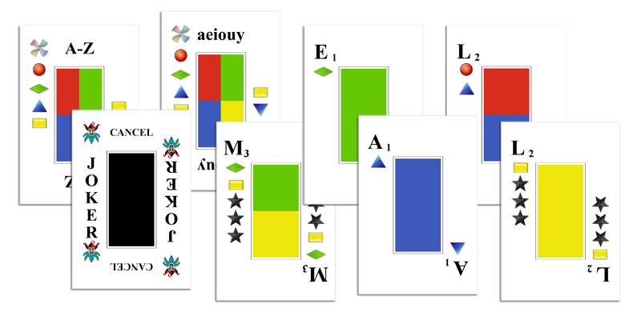
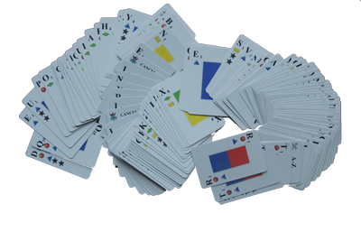
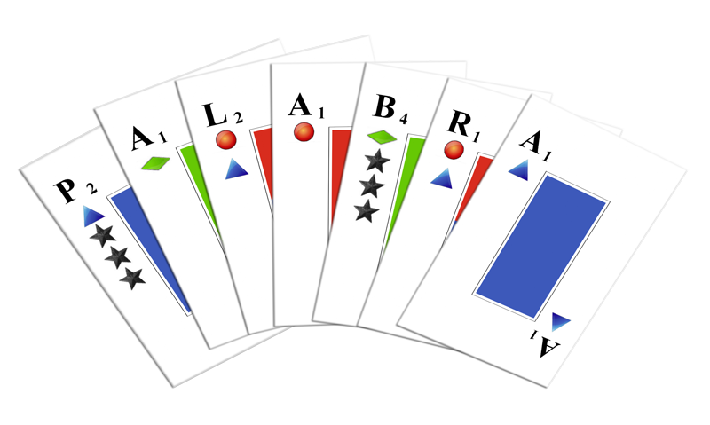

|
|
|
The Rules for PalabraPalabra was invented by Jim Kondrick |
 The deck contains 122 cards, including 3 wild cards, 2 vowel cards, 2 jokers
and 115 cards with letters A-Z. The letter cards are in 4 colors, some
cards have 2 colors, the wild cards have 4 colors. Some cards
have stars which
multiply the value of the entire word by the number of stars. If
all the letters in the word have the same color, the value of the word
is multiplied by 2, and the word is color locked.
Color locked words can only be shaved by cards having the same
color, and can only be built upon with cards having the same color. A
few legal words can be made where all letters have 2 colors; these
words are locked for both colors, and score times 4. Setup: Shuffle the deck or decks. Players cut cards and the card closest to Z will be the first player. Deal each player 7 cards. The rest of the cards become the draw pile, Turns: Players take turns around the table until the draw pile is empty and either no more cards can be played by any player, or one player has played all his cards. A turn consists of
|
Pre-Plays:-or- Shave: play matching cards against the previous player's word. Each card subtracts the value of that card in that word from the victim's word, and adds it to the player's score. If the victim's word is color locked, the shaving cards must have the same color. You can shave only one player, and you can't both shave and joker on the same turn. Variation: normally, only the immediately previous word play can be shaved, but by agreement shaving other words can be permitted. -or- Nothing. you don't have to make a pre-play. After a pre-play, draw back to 7 cards. |
Word PlaysPlay a word: play up to 7 cards to spell a word. Normally "scrabble" rules apply, but by agreement other rules can be used. The only 1 letter words that are acceptable are A and O, not I (because it would be capitalized). A word which uses all 7 of your cards in hand scores a bonus of 70 points. Build on another players word: Take their word, add additional letters to the beginning or end or both. Score for the point value of the letters you took, but not the stars. If the word was color locked your new word must also be color locked. Play a straight: of at least 3 sequential letters. A follows Z. Scoring for straights is the same as for dictionary words. Play a flush: of at least 5 letters, all having the same color. Flushes score only the point value of the cards, stars do not matter and or course there is no color lock doubling. Flushes can't be built on or shaved. Play a vowel play: of at least 6 vowels. "Y" is a vowel. Show the cards, shuffle them back into the draw pile, and draw replacement cards. 6 vowels scores 20 points, 7 vowels scores 40 points. The vowel play ends your turn. Exchange cards: if there are at least 10 cards remaining in the draw pile, show the backs of the cards you are exchanging, draw replacement cards from the draw pile, then shuffle the exchanged cards back into the draw pile. This ends your turn. Pass: if you can't or don't wish to do any of the above, you can pass and do nothing. |
Challenged wordsThere are a lot of 2 and 3 letter words that are found only in Scrabble dictionaries; it's up to you if these words are used or not.Palabra might be challenged as "not an English word"; but it is now. It's the name of this game, so should be ruled as permitted. In friendly games around a table, any word that is accepted by a majority of the other players should be allowed, and likewise, any word that is rejected by a majority of the other players should be withdrawn without penalty, and a new word can be played. If a player refuses to withdraw a rejected word, then it can be formally challenged and the agreed dictionary authority consulted. Penalty: for a successful challenge is that the word is withdrawn and the player's turn ends. Penalty for an unsuccessful challenge is that the challenger forfeits his next turn. |
Scoring ExampleP-A-L-A-B-R-A scores 12 points for the letter values, times 3 for the 3 stars on P, times 3 for the 3 stars on B, for a totalof 12*3*3 = 108 points. Palabra used all 7 letters, so add 70 points, for a total sore of 178. If Palabra were shaved with P and R, 27 points would be removed from the original score and added to the new players score. (The R was worth 9 points in the original word, the P was worth 18 points). If Palabra were later jokered, the original player would lose the remaining 151 points. The shaving player would not be affected.  |
Alternative RulesThis is your game, you get to decide the rules you play with. As long as everyone in the game is playing by the same rules, feel free to change the rules to suit yourself. Here are some examples of alternative rules you might like to try.Shave Anyone or Shave Last and Next Allowing more shaving tends to use up the deck faster, and makes a quicker game. Eliminate High Score remove the joker cards and instead, in the final reckoning, remove the highest scoring word for each player. Simultaneous Play Games with 6 or more players tend to drag, because it takes a long time to get around the table. Instead, everyone plays at the same time. First, if shaving or jokering, place the pre-play cards face down in front of the word they apply to, and draw replacements. Then place your word face down in front of you. When everyone is ready, reveal and resolve all the pre-plays simultaneously, then all the Plays simultaneously. In case of conflicts, allow all as though there were only one play. End the game immediately when not everyone can draw back to 7 cards. Impatient Timers: Add a 1 minute sand timer to the game, which is not used most of the time. If you get impatient with someone taking too long, start the timer. |
| E-Mail: | More about Palabra | Go to BoardSpace.net home page |